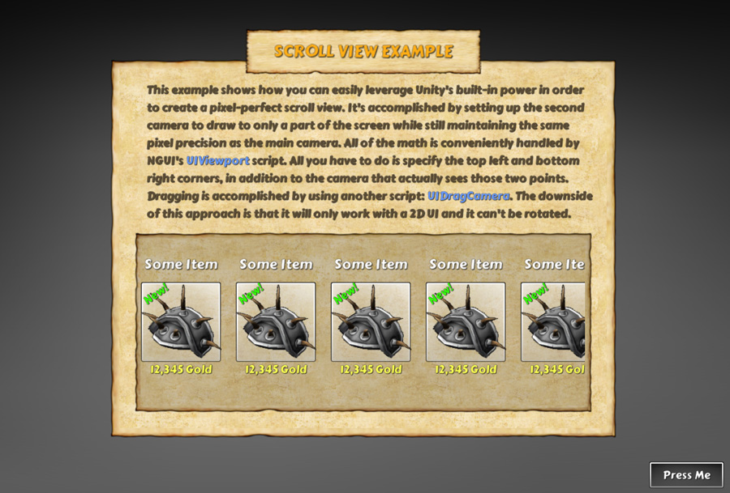

このExampleでは、単純に画面の一部に描画し、2番目のカメラを持っていることによってスクロールビューを作成する方法を示しています。これは非常に高速で、シェーダの使用が含まれていませんので、2DのUIでスクロールビューを処理するのに理想的なアプローチであり、iPhone 1、2、3Gなどの古い機器に適しています。しかし、非常に重大な2つの欠点があります：
もっと何かしたい場合は...そしてあなたの最善の策ではなく、 UIPanel’s Clipping を介して同じスクロールビューシステムを実装する方法を示しています。前のExmapleに固執することです。しかし...本筋を離れます。どのようにExample動作するかに戻りましょう。
このリストでは、2つのカメラがあります。 Main Camera は、メインウィンドウの描画の世話をスクロールビューの左上と右下のコーナーを指定しているゲームオブジェクトのペアがありまます。2番目のカメラは、オフスクリーンに位置し、UI（このアイテムはスクロールのリストの中にある）の別の部分を描画しています。
UIViewport スクリプトは便利な2つのゲームオブジェクトで指定された画面の一部に描画するために必要な手順の背後にあるすべての数学を扱うと、欠けている、すべてのマウスでスクロールビューの項目を移動する機能です。これは実際には、シーン内のコライダー（背景、アイテム）に接続されている UIDragCamera スクリプト経由ではなくカメラを移動することで実現しています。このスクリプトは、2番目のカメラに取り付け UIDraggableCamera スクリプトを示し、そのスクリプト上ではウィジェットの境界のために考慮する Root と同様の動きを Scale で指定することができます（この場合、 X が 1 のときはX上での完全な動作、 0 = はY軸で動かないことを意味します）。また、使用するエフェクトを指定することができます、タッチを離すと運動量が適用されます。
概していえば、これは UIDraggablePanel よりもはるかに小さいスクリプトであり、そういうものとしてより少ない機能を備えています。明るい面では、より少ないコードは、何か起こったときに変更が容易であることを意味します。
